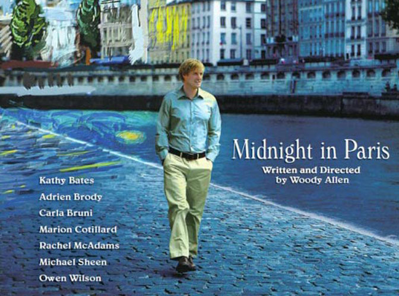
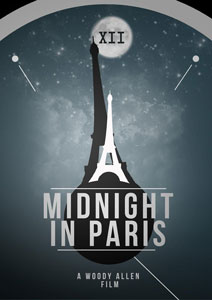
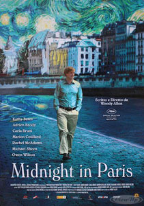
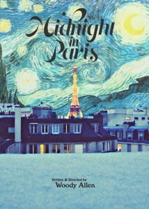
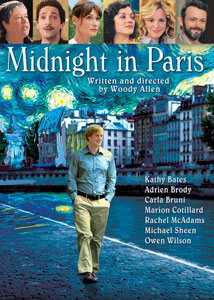
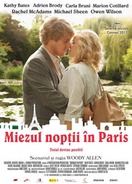
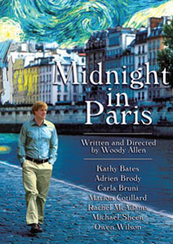

|
||||
Midnight in Paris (2011) |
||||
 |
||||
Director |
- |
Woody Allen | ||
Producers |
- |
Letty Aronson Helen Robin Stephen Tenenbaum Javier Méndez Jack Rollins |
||
Screenplay |
- |
Woody Allen |
||
Cinematography |
- |
Darius Khondji | ||
Production Designer |
- |
Anne Seibel | ||
Costume Designer |
- |
Sonia Grande | ||
Editor |
- |
Alisa Lepselter | ||
Cast |
||||
Gil Pender |
- |
Owen Wilson | ||
Inez |
- |
Rachel McAdams | ||
John, Inez's father |
- |
Kurt Fuller | ||
Helen, Inez's mother |
- |
Mimi Kennedy | ||
Paul Bates |
- |
Michael Sheen | ||
Carol Bates |
- |
Nina Arianda | ||
Museum Guide |
- |
Carla Bruni | ||
Cole Porter |
- |
Yves Heck | ||
Zelda Fitzgerald |
- |
Alison Pill | ||
F. Scott Fitzgerald |
- |
Tom Hiddleston | ||
Ernest Hemingway |
- |
Corey Stoll | ||
Josephine Baker |
- |
Sonia Rolland | ||
Juan Belmonte |
- |
Daniel Lundh | ||
Alice B. Toklas |
- |
Thérèse Bourou-Rubinsztein | ||
Gertrude Stein |
- |
Kathy Bates | ||
Pablo Picasso |
- |
Marcial Di Fonzo Bo | ||
Adriana |
- |
Marion Cotillard | ||
Gabrielle |
- |
Léa Seydoux | ||
Djuna Barnes |
- |
Emmanuelle Uzan | ||
Salvador Dalí |
- |
Adrien Brody | ||
Man Ray |
- |
Tom Cordier | ||
Luis Buñuel |
- |
Adrien de Van | ||
Detective Duluc |
- |
Serge Bagdassarian | ||
Detective Tisserant |
- |
Gad Elmaleh | ||
T. S. Eliot |
- |
David Lowe | ||
Henri Matisse |
- |
Yves-Antoine Spoto | ||
Leo Stein |
- |
Laurent Claret | ||
Henri de Toulouse-Lautrec |
- |
Vincent Menjou Cortes | ||
Paul Gauguin |
- |
Olivier Rabourdin | ||
Edgar Degas |
- |
François Rostain | ||
Belle Époque Woman |
- |
Karine Vanasse | ||
King in Versailles |
- |
Michel Vuillermoz | ||
Maxim's Hostess |
- |
Catherine Benguigui | ||
Partygoer |
- |
Audrey Fleurot | ||
Partygoer |
- |
Guillaume Gouix | ||
Plot |
||||
Pasadena-based successful screenwrite Gil Pender would rather be a novelist than do his current job. A romantic at heart, Gil has little in common with his fiancée Inez or her wealthy conservative parents with whom Gil and Inez are accompanying to Paris. Gil, against Inez's sensibilities, would love to live in Paris so that he could write his novel full time, that novel which is a fantasy of his own life, complete in wanting to live in what he considers the golden era, 1920s Paris. Gil also has little in common with Inez's friends, most specifically Paul and Carol Bates, professor Paul who Gil believes is pedantic as someone who spouts off everything about anything, but whom Inez believes is brilliant. One evening while Inez ditches Gil for an evening out with Paul, Gil gets picked up by a group of party-goers in a 1920's vintage vehicle, who invite him along to their party. At the party, Gil meets a couple named Zelda and F. Scott Fitzgerald, their names which he initially believes is coincidence. He quickly comes to the realisation that he has been transported back to 1920s Paris and the two are indeed the couple famed in literature. On subsequent evenings, Gil discovers that he can travel back to this, his dream setting, at midnight every night at that exact location transported by that 1920s vehicle. Subsequently, he meets and befriends the elite of Paris arts and culture of the time, including Cole Porter, Ernest Hemingway, Gertrude Stein, Pablo Picasso and Salvador Dalí. Gil initially plans to share this revelation with Inez, until he meets Adriana, a muse of Picasso's. There is a seeming mutual attraction between Adriana and Gil. Although he would love for his midnight trips to last forever, his time especially with Adriana shows Gil what he truly is striving for in his present twenty-first century life. |
||||
Filming |
||||
Allen employed a reverse approach in writing the screenplay for this film, by building the film's plot around a conceived movie title, Midnight in Paris. The time-travel portions of Allen's storyline are evocative of the Paris of the 1920s described in Ernest Hemingway's memoir A Moveable Feast, with Allen's characters interacting with the likes of Hemingway, Gertrude Stein and F. Scott and Zelda Fitzgerald, and uses the phrase "a moveable feast" in two instances, with a copy of the book appearing in one scene. Apparently, Cary Grant almost came out of retirement in the 1970s to make this film when the script was at a very early stage. He was very keen to work with Allen and even visited Michaels' Pub unannounced, where Allen would play the clarinet every Monday night, to discuss the role. Gil and the Fitzgeralds visit the nightclub Chez Bricktop, which was owned and operated by the singer and dancer Bricktop from 1924 to 1961. Bricktop previously made a cameo appearance as herself in another Woody Allen film Zelig (1983), in which she claimed that the title character Leonard Zelig (played by Allen) frequented her club in the 1920s. Due to Woody Allen's habit of only giving actors the script pages concerning their characters, Tom Hiddleston was unaware of the film's time travel storyline until he met Owen Wilson on-set and asked him why he wasn't wearing period-accurate clothing like the rest of the cast. With four nominations (Best Picture, Best Director, Best Art Direction, and Best Original Screenplay), this picture is the most Oscar nominated Woody Allen film since Bullets Over Broadway (1994) which got seven Oscar nominations. |
||||
Filming Locations |
||||
- Church of Saint Etienne du Mont, Montagne Sainte-Geneviève, Paris, France (steps where Gil sits before vintage Peugeot arrives); - Cathedral de Notre Dame, Île de la Cité, Paris 4 (Gil sits on the bench while the museum guide translates the book for him); - Place de l'Abbé Basset, Paris 5 (Gil waits on the steps of the church St-Etienne du Mont); - Flea Market, Saint-Ouen, Seine-Saint-Denis; - Hôtel Le Bristol - 112 Faubourg Saint-Honoré, Paris 8; - Musée Rodin - 77 rue Varenne, Paris 7; - Musée de l'Orangerie - Jardin des Tuileries, Paris 1 (Monet's exhibition); - Pont Alexandre III, Paris 7 (final scene); - Shakespeare & Company - 37 Rue de la Bucherie, Paris 5; - Jardin de Monet a Giverny, Eure, France (Monet's garden); - Luxor Obélisque, Place de la Concorde, Paris 8 (also known as Cleopatra's Needle); - Palais Garnier, Avenue de la Opera, Paris; - Place Vendôme, Paris 1 (on street sign); - Pont Neuf, Paris 1; - 16 Rues des Patriarches, Paris (Gil standing outside the Launderette after his first visit to 20s Paris); - Arc de Triomphe, Paris 8; - Chateau de Versailles, Versailles, Yvelines; - Le Grand Véfour, 17 rue de Beaujolais, Paris 1 (where Gil and Inez dine with her parents). |
||||
Quotes |
||||
| Helen: "We saw a wonderfully funny American film last night." Inez: "Who was in it?" Helen: "Oh, I don't know. I forget the name." Gil: "Wonderful but forgettable. It sounds like a film I've seen. I probably wrote it." |
||||
Music |
||||
Si tu vois ma Mère |
- |
Sidney Bechet | ||
Je Suis Seul Ce Soir |
- |
Swing 41 | ||
Recado |
- |
Original Paris Swing | ||
Bistro Fada |
- |
Stephane Wrembel | ||
Let's Do It (Let's Fall in Love) |
- |
Conal Fowkes | ||
You've Got That Thing |
- |
Conal Fowkes | ||
La Conga Blicoti |
- |
Josephine Baker | ||
You Do Something to Me |
- |
Conal Fowkes | ||
I Love Penny Sue |
- |
Daniel May | ||
Charleston |
- |
Enoch Light & The Charleston City All Stars |
||
Ain't She Sweet |
- |
Enoch Light & The Charleston City All Stars |
||
Parlez-moi d'Amour |
- |
Dana Boulé | ||
Offenbach - Barcarolle from "The Tales of Hoffman" |
- |
Yrving & Lisa Yeras and Conal Fowkes | ||
Offenbach - Can-Can from "Orpheus in the Underworld" |
- |
Jacques Offenbach | ||
Ballad Du Paris |
- |
François Parisi | ||
Le Parc de Plaisir |
- |
François Parisi | ||
Reviews |
||||
"Midnight in Paris is a very unselfish and lovely approach to inspiration, love and the written word. A must watch." - Candice Frederick : Reel Talk Online "Allen holds onto his vision of a Golden Age better than anyone else, even while readily acknowledging that it's just a grand illusion." - Eric Kohn : IndieWire |
||||
Additional Artwork |
||||
   |
||||
   |
||||